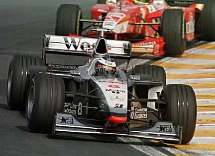
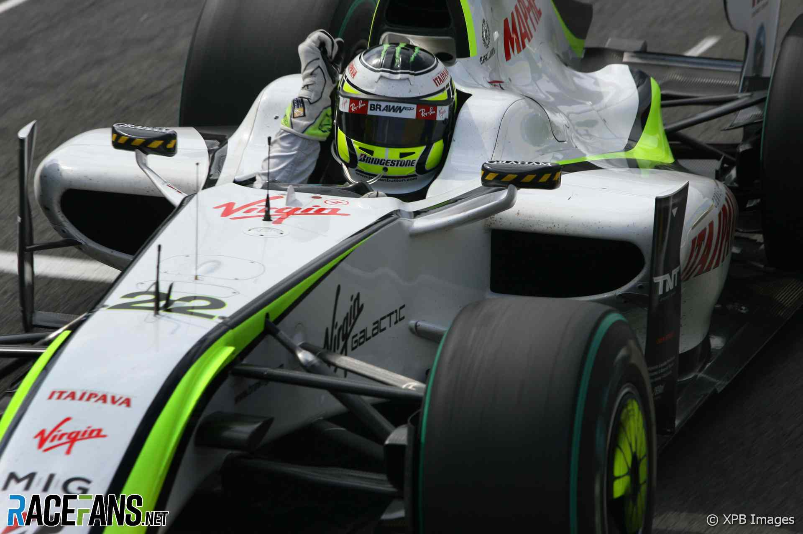
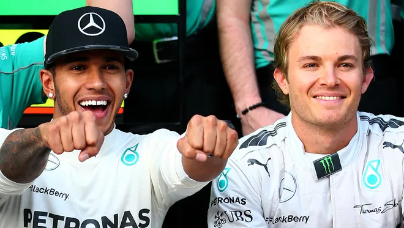
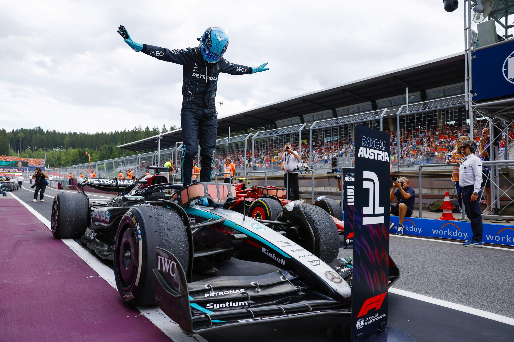

Mercedes

The History of Mercedes
Mercedes was one of the original Formula 1 teams but only returned recently with a lot of success.
Early Days
Mercedes-Benz made a triumphant return to Formula 1 in 1954 with the W196, achieving immediate success. Juan Manuel Fangio secured the 1954 World Drivers' Championship, and the team clinched both the Drivers' and Constructors' titles in 1955. However, following the tragic 1955 Le Mans disaster, Mercedes withdrew from motorsport, pausing their F1 involvement for several decades.

Return as Engine Supplier
Mercedes re-entered Formula 1 in 1994 as an engine supplier, initially partnering with Sauber. In 1995, they formed a more prominent alliance with McLaren, leading to significant success. Mika Häkkinen secured two Drivers' Championships in 1998 and 1999, and the team won the Constructors' Championship in 1998. This partnership continued until 2009, marking a significant era in Mercedes' F1 history.
Brawn GP and Acquisition
In 2009, Honda's F1 team was sold to Ross Brawn, forming Brawn GP. The team achieved remarkable success, winning both the Drivers' and Constructors' Championships in its debut season. Mercedes acquired a majority stake in Brawn GP at the end of 2009, rebranding the team as Mercedes GP for the 2010 season.
Domination with Hamilton
The introduction of turbo-hybrid engines in 2014 marked the beginning of Mercedes' dominance in Formula 1. Under the leadership of Team Principal Toto Wolff and drivers Lewis Hamilton and Nico Rosberg, Mercedes secured seven consecutive Drivers' and Constructors' Championships from 2014 to 2020, setting new records in the sport.
Recent Challenges
The 2022 season presented challenges for Mercedes, with the W13 car struggling to adapt to new regulations. Despite these hurdles, the team remained competitive, with George Russell securing their first win of the season in Brazil. In 2023, Mercedes finished second in the Constructors' Championship, demonstrating resilience and adaptability.
